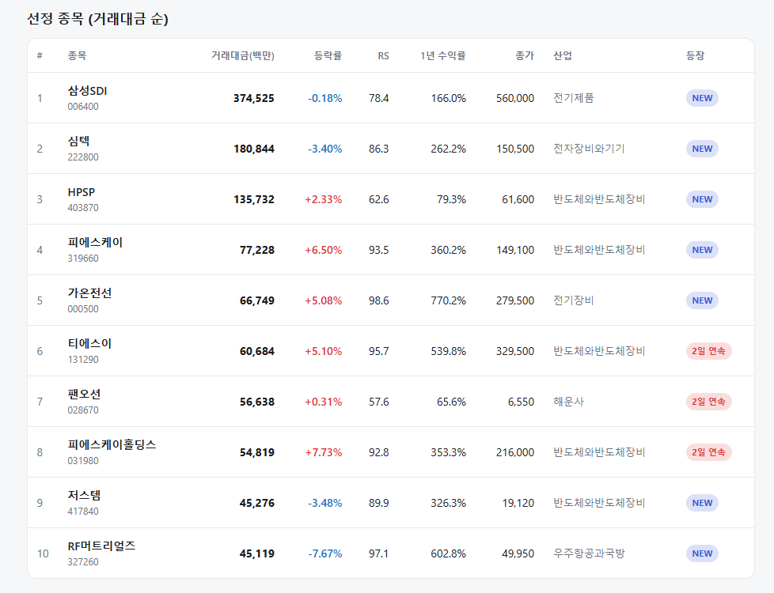
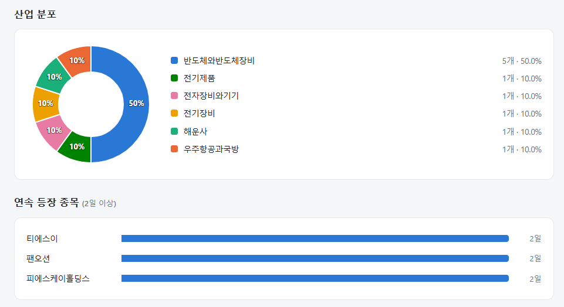
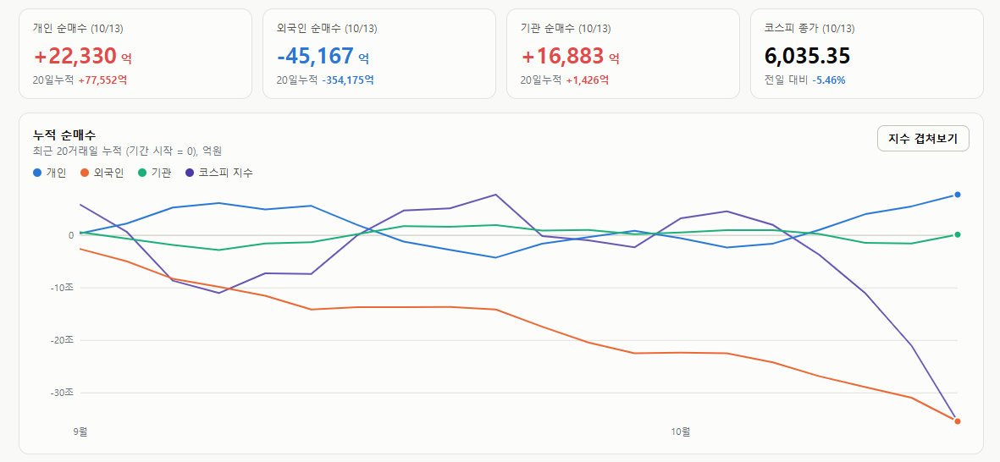

매일의 주도주 정리를 위해 기록합니다.
연속적으로 나온 종목들 또는 상승 후 조정받는 종목 위주로 리서치 해보시면 좋을 것 같습니다.


*오늘 퀀트픽으로는 '티에스이' 입니다.
9월, 10월 1번씩 퀀트픽으로 선정된 종목입니다.
연속종목으로는 티에스이(2회), 팬오션(2회), 피에스케이홀딩스(2회) 출현했습니다.
#주도섹터
출판, 미디어·엔터 및 카드·소비재
주요 업종 및 종목: 출판(+3.48%), 방송과엔터테인먼트(+1.94%), 카드(+1.79%), 무역회사와판매업체(+1.78%), 삼성카드, 대원미디어, 바른손이앤에이.
분석: 시장 전반의 투매 속에서 출판 및 엔터테인먼트, 카드 등 내수·방어적 소비재 섹터만이 유일하게 붉은색 상승 영역을 형성했습니다. 고배당 및 경기 둔화 방어 매력이 부각된 일부 금융주로 피난성 자금이 유입되었습니다.
#조정섹터
반도체 메가 캡 및 전자장비·화장품
주요 업종 및 종목: 반도체와반도체장비(-7.92%), 화장품(-7.86%), 전자장비와기기(-5.84%), 생명과학도구및서비스(-5.81%), SK하이닉스(-9.53%), SK스퀘어(-11.89%), 삼성전기(-7.46%), SK(-7.04%), 삼성전자(-6.79%), 삼성전자우(-6.58%), 두산에너빌리티(-2.24%).
분석: 반도체와반도체장비(-7.92%) 업종이 급락 최상단에 위치했습니다. SK하이닉스가 -9.53% 폭락을 기록했고 삼성전자 역시 -6.79% 급락하며 지수 6,000선 위협의 진원지가 되었습니다. 화장품(-7.86%)과 전자부품 섹터 전반으로 매도세가 전이되었습니다.
#수급동향

코스피 지수는 -5.46% 폭락한 6,035.35로 마감하였습니다. 코스닥 지수 역시 외인·기관의 순매수 유입에도 불구하고 -1.43% 하락한 837.03으로 장을 마쳤습니다.
유가증권시장에서 외국인 투자자가 무려 4조 5,167억 원(20일 누적 -35조 4,175억 원)을 순매도하며 지수를 끌어내렸습니다. 반면 기관 투자자가 1조 6,883억 원(20일 누적 +1,426억 원), 개인 투자자가 2조 2,330억 원(20일 누적 +7조 7,552억 원)을 동반 순매수했습니다.
10월 초 일평균 수출 호조에도 불구하고, 중국 CXMT의 차세대 서버 D램 연내 출시 예고 소식이 반도체 메가 캡의 투자 심리를 급격히 냉각시켰습니다. "삼전닉스 자사주 매입도 막바지"라는 경계감과 결합하며 대형 반도체 중심으로 외국인의 패시브 청산 물량이 일시에 쏟아졌습니다.
코스피 6,000 붕괴 — 왜 한국만 이렇게 거친가
이틀 연속 급락입니다. 코스피가 6,035.35(-5.46%)로 마감하며 5거래일 연속 하락했고, 장중 5,950까지 밀려 7월 30일 이후 처음으로 6,000선을 내줬습니다. 개장 50분 만에 매도 사이드카가 발동됐고, 200일 이동평균선(6,376)도 깨졌습니다. 올해 외국인 누적 순매도는 200조 원을 넘어섰습니다. 그중 SK하이닉스 87조, 삼성전자 86조 — 두 종목에서만 173조입니다. 삼성전자의 외국인 지분율은 17년 만에 최저입니다.
① 대만도 외국인은 팔았다 — 차이는 강도
유진투자증권 허재환 위원의 비교가 핵심을 짚습니다. 사상 최고치 근처에 있는 대만 증시에서도 외국인은 올해 매도 우위였습니다. 1~9월 64조 원을 팔았습니다. 올해 주가 급등에 따른 비중 조절, 금리와 유가 부담 — 한국이나 대만이나 같은 이유입니다.
차이는 강도입니다. 대만 시가총액은 7,160조 원으로 코스피(5,266조)보다 큰데, 외국인 매도는 코스피가 198조로 3배입니다. 시총 대비로 보면 매도 강도가 3배 이상입니다. 대만 가권지수가 올해 70% 올라 코스피(52%)보다 더 뛰었는데도 그렇습니다. "많이 올라서 비중을 줄인다"는 설명으로는 이 차이가 안 나옵니다.
근본 이유는 두 가지입니다.
첫째, 변동성. 업황에서 비롯된 주가 변동성이 대만의 2~3배입니다. 변동성이 큰 시장에서는 같은 불확실성에도 포지션을 더 많이 줄입니다.
둘째, 받쳐줄 국내 수요가 없습니다. 대만 중앙은행은 올해 금리를 한 번도 안 올렸고(2%), 성장률은 11.5%에 물가는 2% 초반입니다. 가계가 주식시장에 꾸준히 머물기 좋은 환경입니다. 한국은 한은이 두 번 올렸습니다. 외국인이 팔 때 받아줄 손이 대만엔 있고 한국엔 약합니다. 관건은 외국인 매도 자체가 아니라, 그걸 상쇄할 국내 매수 기반이 있느냐입니다.
② 7월 하락장과 다른점은
7월 폭락장은 레버리지 상품의 연쇄 청산이 낙폭을 키웠습니다. 지금은 그 왜곡이 없는데도 빠집니다. 그래서 체감이 더 힘듭니다.
이유는 넷입니다. 중국 CXMT의 차세대 서버 D램 출시 발표로 국내 메모리의 경쟁력·점유율 우려가 커졌고, 200일선 이탈로 기술적 추세 훼손 불안이 번졌으며, 연초 대비 여전히 높은 수익률 위에서 외국인이 대규모 포지션을 조정했고, 삼성전자 자사주 매입 종료로 수급이 얇아졌습니다.
키움 한지영 연구원은 "밸류에이션이 아무리 낮아져도, 시장이 미래 이익에 신빙성을 부여하지 않으면 밸류에이션 주장이 통하지 않는다." 라고 합니다. 충분히 공감합니다. 거래가 말라붙어 매도에 대한 가격 저항력 자체가 약해졌습니다. 삼성전자 영업이익 107조에도 주가가 빠진 이유가 여기 있습니다. 숫자가 좋아도, 그 숫자가 내년에도 이어진다는 걸 시장이 믿지 않는 겁니다.
③ 그럼에도 바닥 신호는 쌓이고 있다
거친 장이지만, 단기 바닥을 가리키는 신호들이 동시에 나타나고 있습니다.
과매도: RSI(28)와 이격도 모두 과매도 국면입니다. 7월 폭락장에서도 가지 않았던 수준입니다.
코스피 240일선: 7월에도 지지받고 회복했던 레벨입니다.
외국인 반도체 지분율 47.2%: 2000년 이후 -1 표준편차(47%)에 거의 닿았습니다. 앞서 여러 번 짚었듯, 더 팔 여력보다 돌아올 여력이 큰 자리입니다.
금리: 지난주부터 미국 금리 상승세가 주춤해졌습니다. 외국인 매도의 매크로 배경 하나가 약해지고 있습니다.
실물: 10월 1~10일 수출 +102%, 반도체 +171%. 시장이 믿지 않는 그 미래 이익의 근거가 통계로 나오고 있습니다.
어제 "이 가격대에서 매도에 동참하기보다 홀딩하거나 모아가는 편이 낫다"고 썼습니다. 오늘 5% 더 빠졌지만 판단은 유지합니다. 6,000이 깨진 레벨에서 투매에 동참하면 업사이드 리스크를 더 안게 됩니다.
다만 '거칠어지지 않는 시점'과 '오르는 시점'은 다릅니다. 외국인 매도가 멈추면 하단은 생기지만, 추세가 돌아서려면 국내 매수 기반이든 외국인 복귀든 새 손이 필요합니다. 내일 CPI, 그리고 10월 실적시즌이 그 손을 부르는 계기가 될 수 있습니다. 지금은 바닥을 맞히는 자리가 아니라, 바닥 근처에서 급하지 않게 자리를 잡는 자리입니다.
어려운 장인데 모두 힘내시길 바라겠습니다.